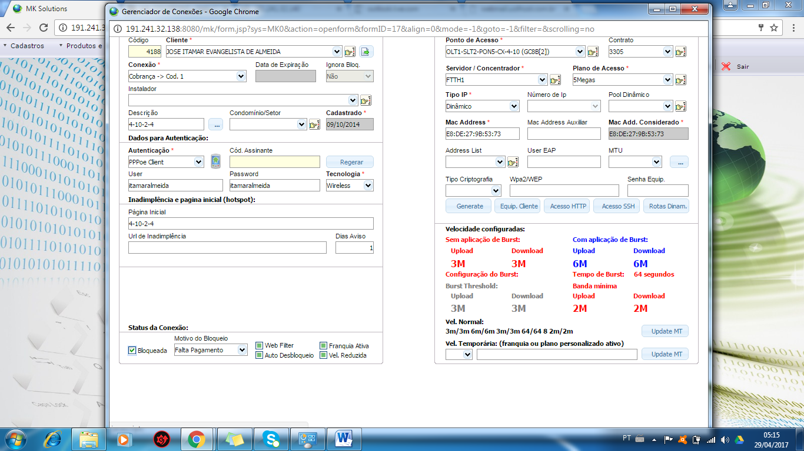

Voltar
Voltar
Verificar erro de Pagamento
- Financeiro Agily Telecom (nome + comprimentos)
- Confirmar as informações cadastrais
- Qual o nome do titular do contrato?
- Acessar o mk Solutions a aba, Suporte / Painel de atendimento e serviço/ painel de atendimento
- Na aba Código/ Nome; informar o nome do titular e clicar ok
- Clicar na aba cadastro e confirmar os dados

- Qual Endereço e cep ?
- telefones para contato ( Obs.: Atualizar os números )
- Qual watsap ?
- Qual o e-mail ? (Obs.: Atualizar e-mail ou colocar não tem)

Verificar erro de Pagamento
Cliente liga para empresa informando que efetuou o pagamento e não constou ou esta bloqueado.
Fazer as seguintes verificações:
- Verificar se tem ticket aberto para esse cliente; Na aba painel de atendimento/ Atendimento/ histórico /Atendimento.
No caso ticket aberto informar ao cliente para aguardar o retorno de ligação do finnaceiro.
- Verificar se tem O.S aberta para esse cliente; Na aba painel de atendimento/ Atendimento/ histórico /Ordens de serviço.
No caso O.S aberta informar ao cliente para aguardar atendimento.
- Verificar nas Liquidações do cadastro do cliente, a ordem dos pagamentos se não há parcela invertida.
- Se o cliente informou o pagamento e não constou dentro do prazo de 48hs uteis entre Terca ate sab, pegar os dados do pagamento (relato, nosso numero, valor, data) e abrir ticket para verificar possível erro e anexar o comprovante.
Pagamento Invertido

-
No caso de Liquidação invertida da parcela subsequente, pedir para o cliente pagar a parcela em atraso, informar sobre a multa e solicitar o desbloqueio da conexão ate a data do próximo vencimento, se houver apenas uma parcela em atraso.
Abertura do ticket:
Após essas verificações, selecionar a aba novo e preencher os campos no painel de atendimento:
Origem do contato= telefônico
Processo = Analise de Pagamento
Informação do cliente = Relatar no erro do pagamento, o vencimento e R$ da parcela invertida, informar sobre o desbloqueio liberado ate o próximo vencimento Gravar e Iniciar.

Fazer o desbloqueio manual:
- Ir na aba Editar/ cadastro/conexões
- Em status da conexão: desmarcar o campo bloqueado
- Em motivo do bloqueio: deixar o campo em branco

- Clicar na aba extra, Exceção, preencher as seguintes informações.
Exceção/ sim, Prazo exceção / colocar ate a data próximo vencimento, Motivo do pagamento / Pagamento invertido e gravar.

- Informar ao cliente que a conexão será liberada em 5 min
- Finalizar o atendimento
Encerrar o ticket
- Na aba painel de atendimento/ Seleciona a aba Ticket de atendimento, clica em encerrar, coloca o comentário do atendimento em comentários públicos e Confirmar o encerramento.
Voltar